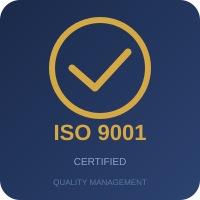
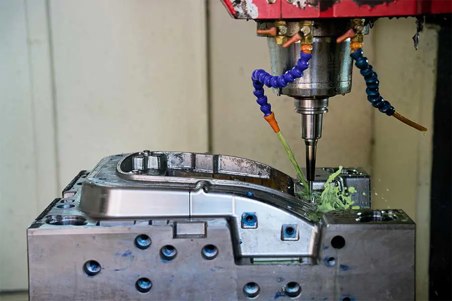
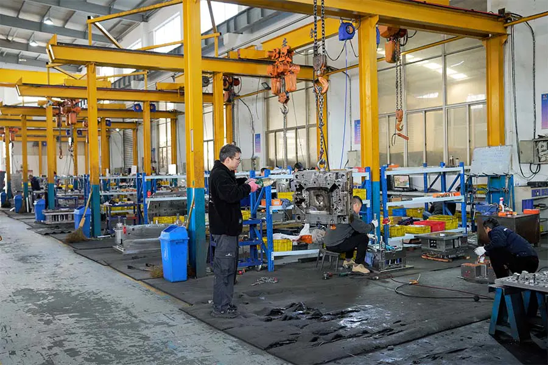
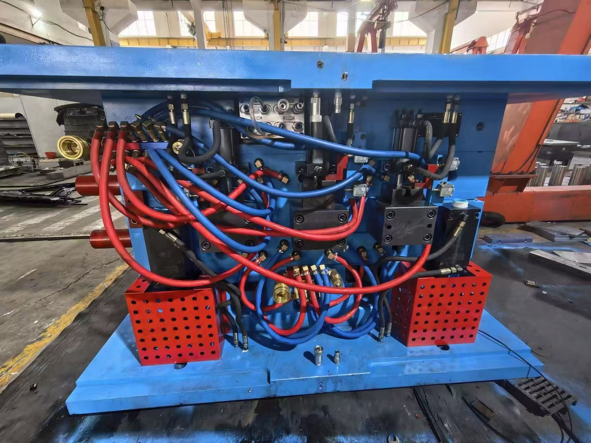
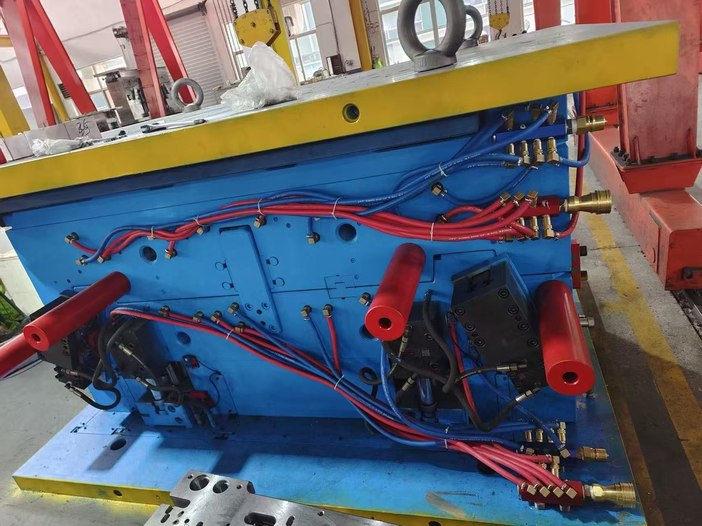

Quality & Certifications
ISO 9001 certified processes, systematic inspection protocols, and a relentless focus on dimensional accuracy — because every micron matters in injection mold manufacturing.
Quality Assurance at a Glance
- ISO 9001 certified quality management system — every process from design through shipment governed by documented procedures and acceptance criteria.
- In-house T1 sampling and dimensional inspection using calibrated CMM, digital height gauges, micrometers, and surface profilometers — full reports shared with every mold delivery.
- PPAP documentation support (typically Level 3) including PFMEA, control plans, MSA, and process capability studies for automotive supply chain requirements.
- SPC-driven production monitoring with real-time control charts for critical dimensions — ensuring every molded part, not just the measured ones, stays within specification.
- Four-stage quality gates: incoming material inspection → in-process dimensional checks → tool tryout & T1 verification → final audit before crating and shipment.

Quality Is Built In, Not Inspected In
At Gege Mould, quality management is not a final checklist — it is embedded into every stage of our process, from the moment we receive your CAD data to the day your mold ships.
We operate under an ISO 9001 certified quality management system, following the guiding principle of "meticulous craftsmanship and complete customer satisfaction." Our quality team is empowered to stop any process that does not meet specification — because we know that a single deviation can cascade into production problems on your factory floor.
From incoming raw material inspection through in-process checks, tool tryouts, and final dimensional verification, every mold leaves our facility with a complete inspection record and T1 sample report.
Certifications & Standards
Our quality system is built around internationally recognized standards that our customers trust.

ISO 9001 — Quality Management Systems
Our core quality management certification. Every process — design, procurement, manufacturing, inspection, and customer communication — is governed by documented procedures with clear acceptance criteria and continuous improvement mechanisms. Regular internal audits and management reviews ensure the system remains effective and evolves with our business.
PPAP — Production Part Approval Process
For automotive customers, we support PPAP submissions at the required level (typically Level 3), including dimensional results, material certifications, process flow documentation, PFMEA, control plans, measurement system analysis (MSA), and initial process capability studies. Our team is experienced with the documentation requirements of global OEM supply chains.
Statistical Process Control
During production molding runs, we apply SPC methodology to monitor critical dimensions and process parameters in real time. Control charts track Cp and Cpk values, giving both our team and our customers confidence that every part produced falls within specification — not just the ones that happen to get measured.
Measurement Systems Analysis & FAI
First Article Inspection (FAI) reports are generated for every new mold using calibrated CMM equipment, height gauges, and precision measurement tools. We perform gauge R&R studies to ensure our measurement systems are capable of detecting variation well within your tolerance band.
How We Control Quality
A systematic approach that catches issues early — when they are cheapest and easiest to fix.
Incoming Material Inspection
Every batch of mold steel, hot-runner component, and raw material is inspected against mill certificates and our own acceptance criteria before entering production.
In-Process Inspection
Dimensional checks at key machining stages — after roughing, before and after heat treatment, and at final fitting. Issues are corrected immediately, not passed downstream.
Tool Tryout & T1 Sampling
Every mold is trialed in-house with production-grade material. T1 samples are dimensionally inspected and a complete report is shared with the customer for review and sign-off.
Final Audit & Shipment
Before crating, each mold undergoes a final comprehensive inspection. All documentation is compiled — inspection reports, material certs, maintenance instructions, and spare parts lists.
Inspection & Measurement Equipment
Precision measurement tools that ensure every mold dimension meets your engineering specification.
CMM
Coordinate Measuring Machines for full 3D dimensional verification of complex mold geometries and molded samples against CAD nominal data.
Height Gauges & Calipers
Digital height gauges, micrometers, and vernier calipers — all calibrated to traceable standards for critical dimension checks.
Surface Roughness
Surface profilometers to verify mold cavity finishes match specified SPI/VDI standards, from mirror polish to textured.
Hardness Testers
Rockwell and Brinell hardness testing to confirm mold steels and heat-treated components meet material specifications.



